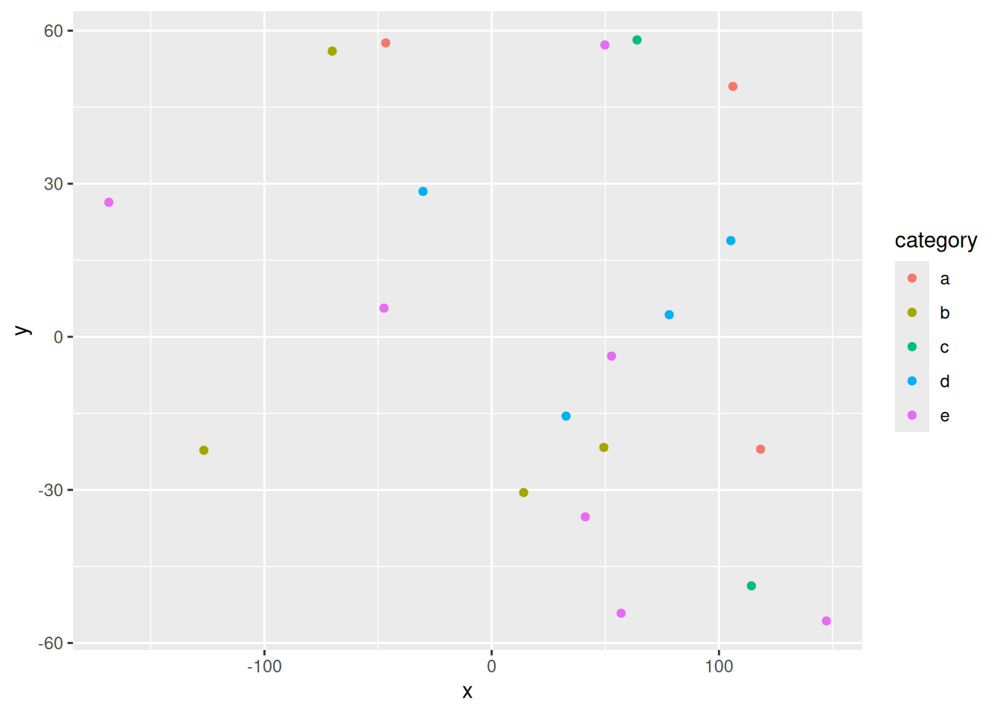

library(tidyverse)
library(leaflet)
library(kableExtra)
library(htmlwidgets)
library(widgetframe)
knitr::opts_chunk$set(widgetframe_widgets_dir = 'widgets' )
knitr::opts_chunk$set(cache=TRUE) # cache the results for quick compilingEating Off Campus
Mapping food access across higher education institutions in Erie County
Introduction
This project seeks to visualize food access across higher education institutions in Erie County, NY by assessing their overall food environment. Using the five dimensions of food access, also known as the 5A’s of food environment, this interactive R project will provide an overview of
- availability and accessibility, which captures the geographical ease with which individuals can access food retailers;
- affordability, which captures objective and subjective measures of cost; and
- acceptability and accommodation, which reflect perceptions and cultural norms related to the food environment in Erie County and the Western New York (WNY) region.
By creating an interactive web page for spatial analysis, this project utilizes the user-friendly R-language to present the current food landscape through the lens of students in higher education, an often-overlooked demographic in local health and nutrition policies.
Why understand food access for college students?
As of 2024, 12.5% of Erie County residents face food insecurity, with approximately 63% of those residents falling below the threshold to be SNAP-eligible. An increase of 1.1% since 2019, the county is experiencing an annual food budget shortfall of approximately $92 million, leading to a significant increase in food prices and taxes on food and beverages. Research indicates that although food insecurity across all demographics is an increasing concern and must be understood at an individual level, broad categorizations of these groups increase invisibility of already vulnerable populations. For instance, in 2020, 19 – 56% of students reported being food insecure on college campuses, four times more than the national average, and their prevalence depending on campus location and related factors.
Demographic selection is not the only variable that lacks comprehensive analysis. Studies show that existing research trends surrounding food and nutritional access often overlook all five dimensions from context-specific methodologies. This dearth in frame of reference, when handpicking only few aspects of the food environment as the central theses, leads to further disparities in how we evaluate the perceptions of healthy, nutritious food available to individuals in a community.
Materials and methods
[~ 200 words]
Narrative: Clear narrative description of the data sources and methods. Includes data from at least two sources that were integrated / merged in R.
Code: The code associated with the project is well organized and easy to follow. Demonstrates mastery of R graphics and functions.
Data: The underlying data are publicly accessible via the web and downloaded/accessed within the Rmd script. If you want to use your own data, you must make it available on a website (e.g. Figshare) so that others are able to re-run your code.
Load any required packages in a code chunk (you may need to install some packages):
Download and clean all required data
| Institution | Address | Source |
|---|---|---|
| BRYANT & STRATTON COLLEGE - AMHERST | 3650 Millersport Highway, Getzville, NY 14068 | Official institution website |
| BRYANT & STRATTON COLLEGE - BUFFALO | 110 Broadway, Buffalo, NY 14203 | Official institution website |
| BRYANT & STRATTON COLLEGE - SOUTHTOW | 180 Redtail Road, Orchard Park, NY 14127 | Official institution website |
| BUFFALO STATE UNIVERSITY | 1300 Elmwood Avenue, Buffalo, NY 14222 | Official institution website |
| CANISIUS UNIVERSITY OF BUFFALO, NY | 2001 Main Street, Buffalo, NY 14208-1098 | Official institution website |
| D’YOUVILLE UNIVERSITY | 320 Porter Avenue, Buffalo, NY 14201 | Official institution website |
| DAEMEN UNIVERSITY | 4380 Main Street, Amherst, NY 14226 | Official institution website |
| ERIE COMM COLLEGE-CITY CAMPUS | 121 Ellicott Street, Buffalo, NY 14203 | Official institution website |
| HILBERT COLLEGE | 5200 South Park Avenue, Hamburg, NY 14075 | Official institution website |
| SISTERS CHARITY HOSP SCH OF NURSING | 2157 Main Street, Buffalo, NY 14214 | Project-author verified |
| SUNY BUFFALO | 190 Founders Promenade, Getzville, NY 14068 | Project-author verified |
| TROCAIRE COLLEGE | 360 Choate Avenue, Buffalo, NY 14220 | Official institution website |
| VILLA MARIA COLLEGE OF BUFFALO | 240 Pine Ridge Road, Buffalo, NY 14225 | Official institution website |
Institution list: NYSED Erie County profile.
NYSED list retrieved and table generated: 2026-11-07 (UTC).
Addresses are supplemental records maintained in extract_institutions.r. Source links identify the associated official websites. These websites are not automatically scraped for updated addresses during this workflow.
The Sisters Charity Hospital School of Nursing entry uses the Sisters of Charity Hospital address: 2157 Main Street, Buffalo, NY 14214. The SUNY Buffalo entry uses 190 Founders Promenade, Getzville, NY 14068. Both locations were independently verified and selected by the project author.
OpenStreetMap was not queried in this workflow because the live requests were timing out. No OSM feature matches are claimed.
n=20
data=data.frame(x=runif(n,-180,180),
y=runif(n,-60,60),
size = runif(n, 5, 20),
category = factor(
sample(letters[1:5], n, replace = TRUE)
),
value = rnorm(n))data %>%
slice(1:10) %>% #show only 1:n rows
kable(digits=2,align="c")%>% #make table and round to two digits
kable_styling(bootstrap_options =
c("striped", "hover", "condensed", "responsive")) #apply other formatting| x | y | size | category | value |
|---|---|---|---|---|
| 49.81 | 57.19 | 14.23 | e | -0.08 |
| -47.40 | 5.62 | 7.50 | e | -1.65 |
| 114.29 | -48.80 | 11.81 | c | -1.87 |
| 41.18 | -35.28 | 14.17 | e | 0.10 |
| 118.31 | -22.02 | 15.45 | a | 0.37 |
| 105.22 | 18.86 | 9.96 | d | -0.50 |
| 32.72 | -15.53 | 10.98 | d | -0.42 |
| 14.06 | -30.52 | 8.00 | b | 1.38 |
| 147.29 | -55.68 | 10.20 | e | 0.26 |
| 78.12 | 4.33 | 7.04 | d | -0.90 |
Add any additional processing steps here.
Results
[~200 words]
Tables and figures (maps and other graphics) are carefully planned to convey the results of your analysis. Intense exploration and evidence of many trials and failures. The author looked at the data in many different ways before coming to the final presentation of the data.
Show tables, plots, etc. and describe them.
m <- leaflet(data) %>%
addTiles() %>%
addCircleMarkers(~x, ~y, radius = ~size,color = ~as.factor(category)) %>%
addPopups(~x[2], ~y[2], "Random popup")
m # a map with the default OSM tile layerMap of completely random data
data %>%
ggplot(aes(x=x,y=y,col=category))+
geom_point()
Dygraphs Example
library(dygraphs)
dygraph(nhtemp, main = "New Haven Temperatures") |>
dyRangeSelector(dateWindow = c("1920-01-01", "1960-01-01")) Conclusions
[~200 words]
Clear summary adequately describing the results and putting them in context. Discussion of further questions and ways to continue investigation.